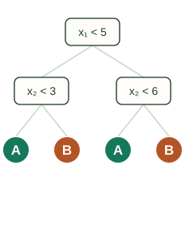
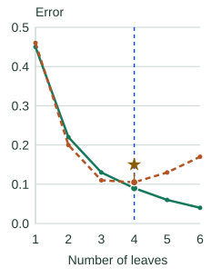

CART, Complexity & Pruning
A split can improve training predictions while adding very little useful structure. This chapter explains how CART builds its binary tree, what the search costs, and how pruning trades a better fit against a larger tree.
One question, two children
CART means Classification and Regression Trees. Each internal node sends a row to one of two children. A numeric question might be “is income below 50?” Categorical subset questions are also possible, although library support varies.
The split criterion depends on the task and implementation. Classification commonly uses Gini impurity or entropy. Squared-error regression predicts the mean target in each leaf. The previous explanation of impurity tells us how to judge the resulting children.
Sorting dominates a simple exact search
Let $n$ be the number of training rows and $D$ the number of features. Consider an implementation that sorts each feature afresh at every node, then sweeps the sorted rows with running statistics.
| Work | Cost under these assumptions |
|---|---|
| Find a split at a node with $n$ rows | $O(Dn\log n)$ |
| Grow a balanced tree by repeating that search | $O(Dn\log^2 n)$ |
| Predict one row | $O(\text{path depth})$ comparisons |
The linear sweep assumes efficient running impurity statistics, or a fixed number of classes. Unbalanced trees can cost more to build; presorting and histogram algorithms have different costs. See threshold search for the actual sweep.
Training fit is only one side of the decision
Small leaves can fit accidental details of the sample, making predictions unstable on new rows. Depth and minimum-leaf-size limits stop growth early. Post-pruning instead removes branches from an already grown tree. Choose controls using validation data; neither approach is universally best.
Even unrestricted growth cannot separate identical feature rows with conflicting labels. Perfect training accuracy, when attainable, is still not a generalization test.
Charge a price for each leaf
Call a candidate subtree $T$, its training fit cost $R(T)$, and its number of leaves $|T|$. The fit cost may be weighted leaf impurity or another loss, depending on the implementation. Let $\alpha\geq0$ be the price per leaf:
Read $\alpha|T|$ as price per leaf × number of leaves. We choose $\alpha$ as a tuning parameter; it is not calculated from the leaf count. For a fixed $\alpha$, compare candidate trees using that same price.
The animation starts at $\alpha=0$: each leaf is charged zero. The tree still has $|T|=6$ leaves, so its penalty is $0\times6=0$ and its total cost is just its training error, $0.040$. This is the starting case with the size penalty switched off.
A six-leaf tree can also have a positive penalty. At $\alpha=0.010$, its penalty would be $0.010\times6=0.060$, giving a total cost of $0.040+0.060=0.100$. Its leaf count has stayed the same; only the price changed.
A branch survives only while its improved fit justifies its extra leaves. Increasing the price favors smaller subtrees. Weakest-link pruning builds a nested sequence by removing the branch with the smallest increase in fit cost per leaf removed.
Where does a branch’s pruning threshold come from?
Suppose collapsing a branch raises the fit cost by $\Delta R$ and replaces $L$ leaves with one. We lose that fit improvement but save $L-1$ leaf penalties. The two choices tie when
In this example, going from six leaves to five raises training error from 0.040 to 0.060 and removes one leaf. The two trees tie at $\alpha=(0.060-0.040)/(6-5)=0.020$.
At the animation's next price, $\alpha=0.025$, the six-leaf tree costs $0.040+0.025\times6=0.190$, while the five-leaf tree costs $0.060+0.025\times5=0.185$. The five-leaf tree now wins: saving one leaf's 0.025 penalty outweighs the 0.020 increase in training error. Compare these costs at the same $\alpha$; successive animation frames change both the price and the selected tree.
▶ Pruning a Tree as the Penalty Rises
A constructed sequence of smaller trees, with illustrative training and validation errors. The star marks the best validation result among these candidates.
At each tree question, the left branch means yes and the right branch means no. As pruning removes leaves, the dashed blue guide moves left along the error curve. Here, training error supplies the fit cost R(T).
Current subtree
Error versus tree size
Validation-selected subtree

Error versus tree size

α = 0.035 · 4 leaves · training error 0.090 · validation error 0.105
Leaf penalty α|T|: 0.035 per leaf × 4 leaves = 0.140.
Total training objective Rα(T): 0.090 training error + 0.140 leaf penalty = 0.230.
In this illustrative sequence, four leaves give the lowest validation error. The numbers are supplied examples, not results from a training run or a computed weakest-link search. Real validation curves need not be U-shaped. Use validation or cross-validation to select a subtree, and keep the final test set for evaluation after selection.
The same idea with numeric targets
For targets 2, 4, and 9 in one leaf, the mean prediction is 5. Its squared errors add to 9 + 1 + 16 = 26. A valid split separating targets (2, 4) from (9) predicts 3 and 9 in the two leaves, reducing the total squared error to 1 + 1 + 0 = 2.
That is a large training improvement, but more leaves still need to earn their place on validation data. The regression implementation shows the calculations in code. Next, bagging tackles instability by averaging multiple trees.
Sources and next steps
- Decision Trees — Binary partitioning, implementation choices, and cost-complexity pruning.
- scikit-learn pruning example — A working pruning path and the effect of the leaf penalty.